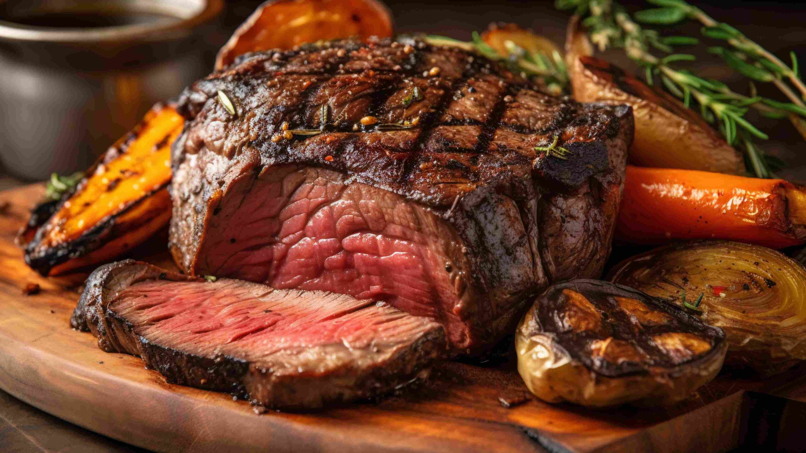

<!DOCTYPE html>
<html lang="pt-br">
<head>
    <meta charset="UTF-8">
    <meta name="viewport" content="width=device-width, initial-scale=1.0">
    <title>Carnes</title>
</head>
<body>
    
</body>
</html><!DOCTYPE html>
<html lang="pt-br">
<head>
    <meta charset="UTF-8">
    <meta name="viewport" content="width=device-width, initial-scale=1.0">
    <link rel="stylesheet" href="estilo.css">
    <title>Carnes</title>
</head>
<body>
    <header>
        <h1><a href="index.html" type="html">Receitas.com</a></h1>
        <nav class="nav2">
            <a href="#s">Carnes</a>
            <a href="#">Massas</a>
            <a href="#">Peixes</a>
            <a href="#">Sobremesas</a>
        </nav>        
        </header>

       <main>
        <h1>Picanha na Churrasqueira</h1>
        
        
        <h2>Ingredientes</h2>
         <ul>
            <li>1 peça de picanha em bifes grossos (1 kg)</li>
            <li>Sal grosso a gosto</li>
            <li>Farofa para acompanhar</li>
        </ul>
    
        <h2>Modo de Preparo</h2>
        <p>Para o vinagrete, misture em uma vasilha a cebola, o tomate, o pimentão, o cheiro-verde, o óleo, o suco de limão e sal.
        Reserve na geladeira.
        Tempere aos bifes de picanha com sal grosso e leve à churrasqueira em uma grelha, com o fogo alto, por 12 minutos, virando na metade do tempo, ou até dourar.
        Em seguida, sirva acompanhada do vinagrete e de farofa.</p>
        <br>
        <p>Tempo de preparo: 30min <br>    
            Rendimento: 6 porções <br>
            Nível de dificuldade: fácil</p>
       </main>   
       <footer> <p style="font-size: 0.7em;">&copy; 2024 Receitas.com</p><p style="font-size: 0.5em;">Todos os direitos reservados</footer>
    </body>
</html>